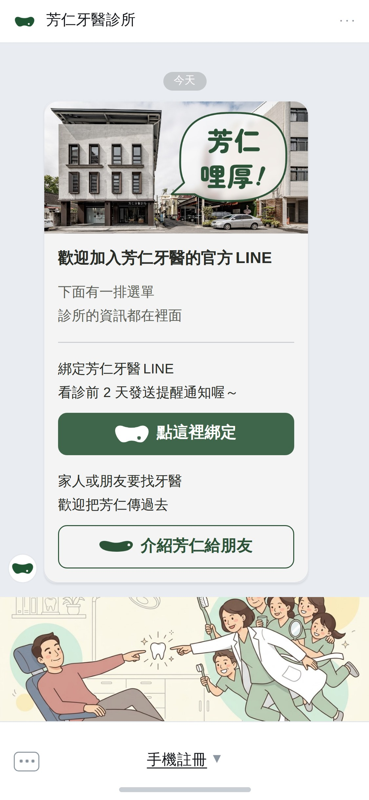
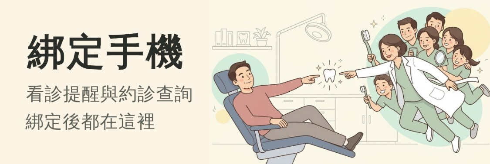
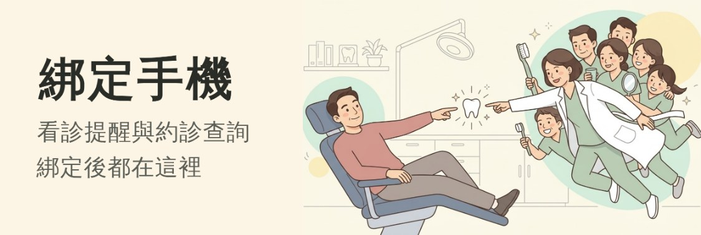
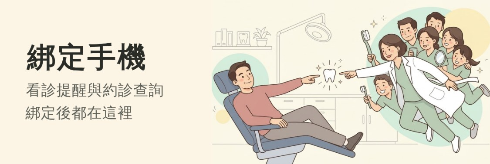
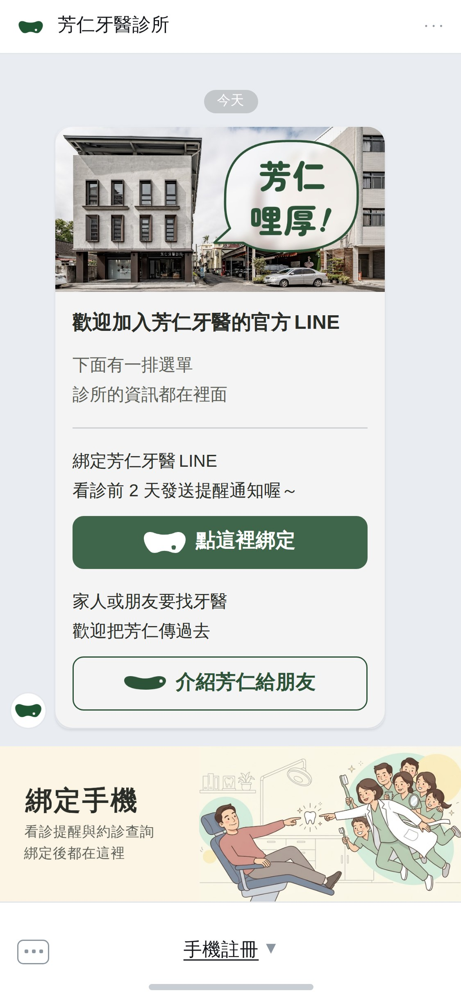
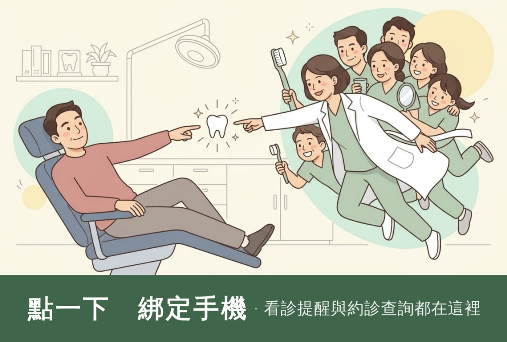
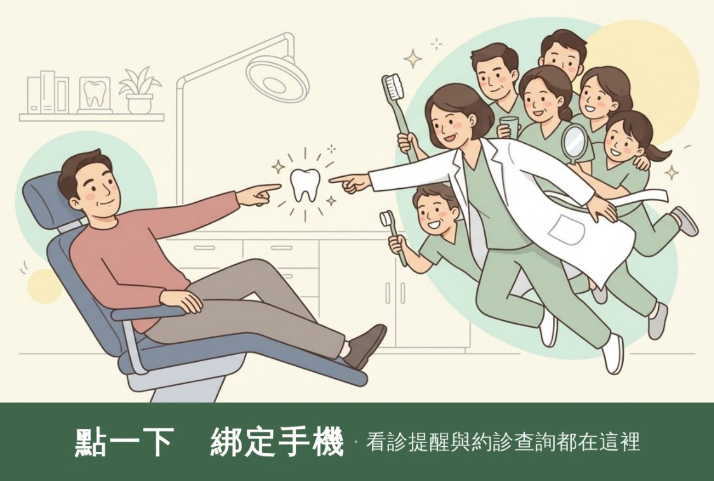
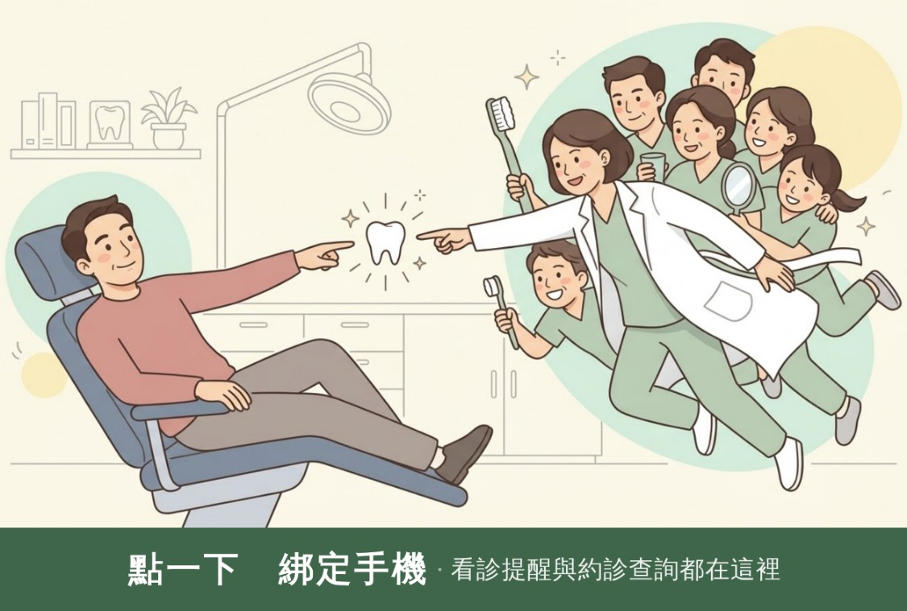
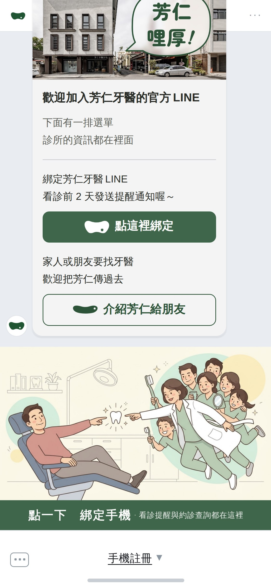
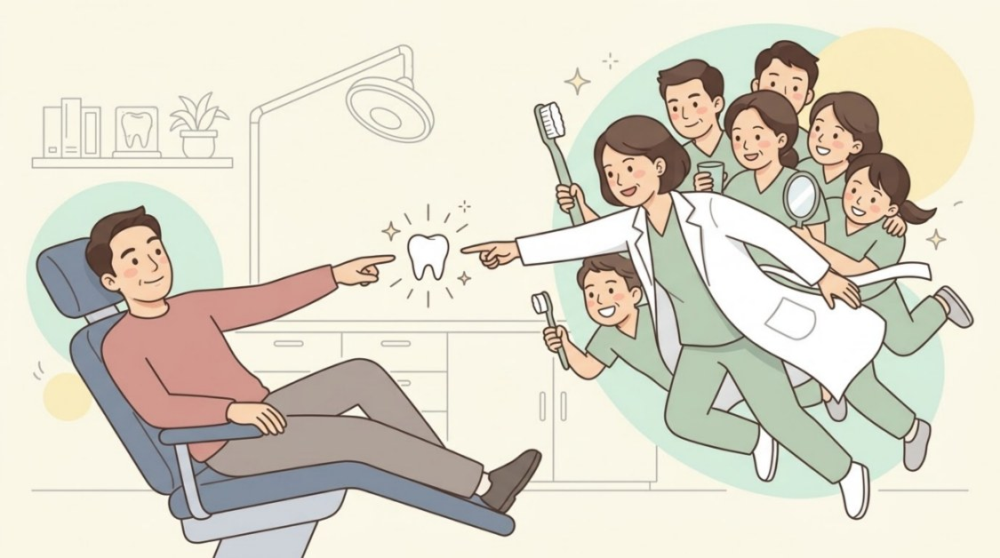

先回答尺寸那一題：那條選單的比例是 LINE 定的，不是隨便給多大就多大。
你合進去被裁掉的不是裁法沒調好 ——
插圖是 1.79:1，那條選單是 2.97:1，硬塞就一定要切掉四成的高度，
切掉的正好是上面那排頭和下面的腳。
底下每一格都畫成手機上真正的大小（螢幕寬 375），不要放大看。
你挑的 Ⓐ 與 Ⓑ 各接了一把尺：Ⓐ 的藥丸「點一下」已經拿掉，剩下的是主標與副標要多小；
Ⓑ 是帶子與帶子上的字要多小。三格只差字級，版型、圖欄、裁法一個數字都沒動。
| 版型 | 尺寸 | 比例 | 手機上 |
|---|---|---|---|
| 大型 | 2500×1686 1200×810／800×540 | 1.483 | 375×253 |
| 小型（現在這種） | 2500×843 1200×405／800×270 | 2.966 | 375×126 |
版型裡的格子可以自己切（幾格、切在哪），但整張圖的比例只有這兩個， 上傳的圖對不上就會被它自己裁。

只看得到原圖的 60%：後面那排人的頭被切平、六個人的腳全部不見，
而且整條沒有一個字叫人去綁定，只剩選單列那行「手機註冊」。
這一張是整支手機的模擬（375×812 ＝ 一支 iPhone），底下那兩把尺是選單自己那一條。

Ⓐ1 現在這樣 主標 28.5px 副標 13.8px

Ⓐ2 小一階 主標 24.8px 副標 12.3px

Ⓐ3 再小一階 主標 21.8px 副標 11.4px 建議

Ⓐ3 擺進整支手機的樣子。藥丸「點一下」已經拿掉 ——
你說得對，它會讓人以為只有那一顆可以按，而整條選單本來就都可以按。
三格的圖欄一模一樣（213×126，只裁掉左右各 3%、看得到 94%），
差的只有字。字愈小，插圖愈像主角；Ⓐ3 的副標 11.4px 已經接近讀得到的下限（10px）。

Ⓑ1 現在這樣 帶子 49.5px 主標 18.9px 副標 12.0px 看得到 97%

Ⓑ2 小一階 帶子 41.3px 主標 16.5px 副標 10.8px 看得到 99% 建議

Ⓑ3 再小一階 帶子 34.5px 主標 14.4px 副標 10.2px 看得到 96%

Ⓑ2 擺進整支手機的樣子。選單仍然是 253px ——
上面那張招呼圖卡的頭圖還是被擠出畫面，那不是模擬做壞了，
是大型版型的高度和帶子無關（見開頭那一段）。
⚠ 帶子不是愈小愈好：帶子收到 291px（畫布上）時，剩下的圖欄正好等於插圖自己的
1.79 比例 —— 那是「看得到」的最高點。Ⓑ2 就在那附近（99%）；
再收下去圖欄變得比插圖還扁，換成左右被裁，Ⓑ3 因此掉回 96%。

留著是因為它是「尺寸到底能不能變」那一題的答案：看得到 100%，
比例正好是插圖自己的 1.79。
兩個代價 ——後台選不到這個尺寸（要廠商用系統送），
以及整張都是圖，沒有地方放字。
| 版型 | 圖檔 | 手機上 | 看得到 | 一個人頭 | 主標 | 副標 | 帶子 | 檔案 | |
|---|---|---|---|---|---|---|---|---|---|
| Ⓧ 現況 | 小型 | 2500×843 | 375×126 | 60% | 22.3px | 沒有 | 沒有 | — | 265KB |
| Ⓐ1 現在這樣 | 小型 | 2500×843 | 375×126 | 94% | 13.5px | 28.5px | 13.8px | — | 260KB |
| Ⓐ2 小一階 | 小型 | 2500×843 | 375×126 | 94% | 13.5px | 24.8px | 12.3px | — | 251KB |
| Ⓐ3 再小一階 | 小型 | 2500×843 | 375×126 | 94% | 13.5px | 21.8px | 11.4px | — | 246KB |
| Ⓑ1 現在這樣 | 大型 | 2500×1686 | 375×253 | 97% | 22.3px | 18.9px | 12px | 49.5px | 424KB |
| Ⓑ2 小一階 | 大型 | 2500×1686 | 375×253 | 99% | 22.6px | 16.5px | 10.8px | 41.3px | 420KB |
| Ⓑ3 再小一階 | 大型 | 2500×1686 | 375×253 | 96% | 23.3px | 14.4px | 10.2px | 34.5px | 424KB |
| Ⓒ 自訂 | 自訂 | 2500×1396 | 375×209 | 100% | 22.4px | 沒有 | 沒有 | — | 355KB |
「一個人頭」量的是原圖裡患者那顆頭（86×82px）縮到選單上還剩多高 —— 這一格才是「圖看不看得懂」的判準，不是圖檔多大。 所有字級都是手機上的 px（畫布上的數字 × 0.15）。 LINE 的上限是 1MB，八張都遠低於。
chat-*.jpg（整支手機）與 strip-*.jpg（那一條選單，1125 寬 ＝ 螢幕寬的三倍）
都是模擬用的，不是要上傳的檔。
挑定哪一格再重跑 node drafts/channels/richmenu-bind.mjs 就好，
文案改在那支的 COPY。
產生器 node drafts/channels/richmenu-bind.mjs
守門 node drafts/channels/check-richmenu.mjs
推導 drafts/channels/README.md 第三十七節
插圖 drafts/bind-done-v4-src.jpg（＝綁定完成卡那張頭圖的原檔，1376×768）
⚠ 這一頁沒有用到你那張截圖的任何一個像素 —— 聊天室、選單列、手機外框全部自己畫，
尺寸照那張截圖量到的 1125×2436。這個 repo 是公開的。